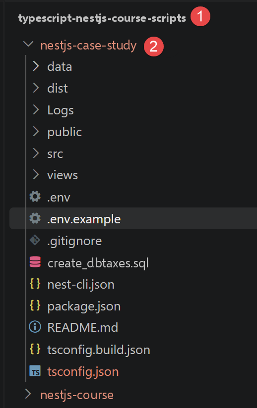
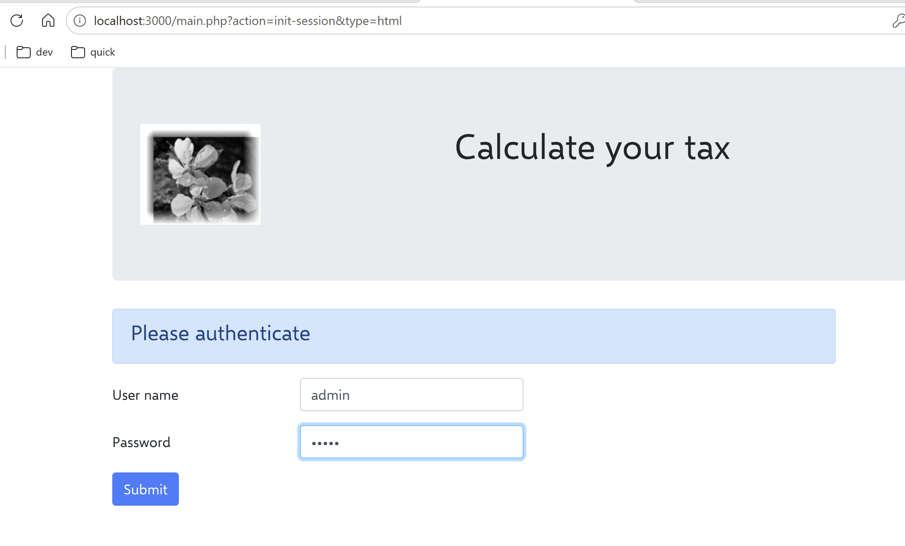
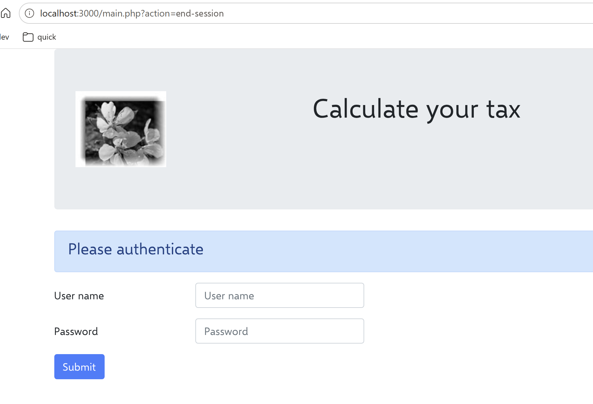

9. Caso de estudio: el servidor de cálculo de impuestos en NestJS

9.1. Recapitulación de los requisitos
El servidor que se va a portar es un servidor de cálculo del impuesto sobre la renta (PHP) (véase Introducción al lenguaje PHP7 mediante ejemplos), con una arquitectura en capas (Config / Entities / Model-DAO-Business / Controllers / Responses / Views), con un controlador frontal (main.php) que enruta las solicitudes entrantes, todas con la forma de una URL (main.php?action=...), al controlador correspondiente según la acción. El objetivo del port era conservar esta arquitectura MVC exactamente tal cual en NestJS, acción por acción y código de estado por código de estado, de modo que siguiera siendo compatible con el cliente HTML/TypeScript ya escrito para el servidor PHP.
9.2. La arquitectura MVC se conserva
La correspondencia entre los dos servidores es directa:
- Config/config.json ↔ ConfigService;
- Entities/*.php ↔ entities/*.entity.ts (TaxAdminData, Simulation);
- Model/ServerDao*.php ↔ ServerDaoService (capa [DAO], Capítulo 5);
- Model/ServerBusiness.php ↔ ServerBusinessService (capa [business], alcance línea por línea);
- Controllers/*Controller.php (uno por acción) ↔ un controlador de acción por clase TypeScript, seleccionado dinámicamente por un registro (ActionsRegistryService);
- Responses/*Response.php ↔ ResponseSenderService (JSON, XML) y HtmlViewRendererService (HTML);
- Views/*.php ↔ plantillas EJS (views/*.ejs), con el mismo diseño de Bootstrap.
9.3. Estructura de archivos del proyecto
Antes de entrar en el detalle de cada capa, esta es la estructura completa de directorios del proyecto nestjs-case-study, tal como aparece después de ejecutar npm install (la carpeta dist/ , generada por npm run build, y el directorio node\_modules/ no se muestran):
La función de cada elemento:
- .env / .env.example — variables de entorno (puerto, secreto de sesión, parámetros de MySQL y TAX_DATA_SOURCE, etc.) leídas por ConfigService; .env no está versionado (.gitignore); .env.example sirve como plantilla para copiar (cp .env.example .env);
- .gitignore — excluye node_modules/, dist/, .env, y los registros del repositorio;
- README.md — documentación del proyecto (instalación, correspondencia entre PHP y NestJS, estructura de directorios anotada): este capítulo resume y amplía ese contenido;
- create_dbtaxes.sql — script de creación de la base de datos MySQL dbtaxes-2019 (tablas tbbrackets, tbconstants..., que se usa solo cuando TAX_DATA_SOURCE=mysql);
- nest-cli.json, tsconfig.json, tsconfig.build.json — configuración de la CLI, de NestJS y del compilador de TypeScript, ya tratada en capítulos anteriores;
- package.json — dependencias (ejs, express-session, mysql2, js2xmlparser, dotenv...) y scripts de npm (start, start:dev, build);
- data/tax-admin-data.json — conjunto de datos tributarios de respaldo, que se usa cuando TAX_DATA_SOURCE=json: no es necesario instalar MySQL para probar el servidor;
- Logs/ — directorio de registros de la aplicación (logs.txt), escrito por LoggerService; se crea automáticamente al iniciar si aún no existe;
- public/Resources/logo.jpg — imagen estática, servida tal cual por app.useStaticAssets(...) en main.ts, utilizada por el banner de las vistas HTML;
- views/ (en la raíz del proyecto): las plantillas EJS y sus parciales, detalladas más adelante en “Construcción de páginas HTML”;
- src/main.ts — punto de entrada: inicia el servidor NestJS (véase más abajo);
- src/app.module.ts — módulo raíz: declara MainController como único controlador y todos los proveedores de la aplicación;
- src/main.controller.ts — el controlador frontal, ya descrito anteriormente;
- src/config/ — la configuración de la aplicación (ConfigService), detallada más adelante;
- src/entities/ — las clases de datos (Simulation, TaxAdminData, TaxException), detalladas más adelante;
- src/model/ — las capas [DAO] y [business] ;
- src/actions/ — un controlador por acción, la interfaz común ActionController, y el registro ActionsRegistryService;
- src/responses/ — generación de respuestas (JSON/XML) y gestión de CORS (ResponseSenderService);
- src/views/ — Nota: no debe confundirse con el directorio
views/de la raíz. Esta carpeta contiene únicamente TypeScript: la construcción de los modelos de visualización (view-models.ts) y la selección y el renderizado de la vista (EJS) (html-view-renderer.service.ts); - src/session/ — tipado TypeScript de la sesión de Express (session.types.ts);
- src/utilities/ — registro de eventos (logging) (LoggerService);
- src/filters/ — directorio reservado, actualmente vacío: aún no se usa en esta versión del proyecto.
Dos archivos merecen una mención adicional: src/main.ts y src/app.module.ts, ambos específicos de este proyecto (más allá del framework ya tratado en capítulos anteriores). Extracto de src/main.ts:
Comentemos este código:
- línea 4: app.useStaticAssets(join(process.cwd(), 'public')); — sirve tal cual los archivos de la carpeta public/ (aquí, public/Resources/logo.jpg) mediante una ruta estática, sin pasar por un controlador de NestJS;
- línea 6: app.use(session({...})); — instala el middleware express-session directamente en la aplicación NestJS: app.use(...) funciona aquí exactamente como en una aplicación Express normal, ya que NestJS se construye sobre ella; esto es lo que da sentido a request.session en MainController y en cada controlador de acción;
- línea 13: const port = Number(process.env.PORT ?? 3000); — el puerto de escucha, como el resto de los parámetros configurables, proviene de una variable de entorno (en el archivo .env ), con 3000 como valor predeterminado.
src/app.module.ts es el módulo raíz (ya visto en capítulos anteriores): declara MainController como único controlador y enumera todos los proveedores de la aplicación en su arreglo providers: los servicios (ConfigService, LoggerService, ServerDaoService, ServerBusinessService, ResponseSenderService, HtmlViewRendererService, ActionsRegistryService) y los ocho controladores de acción, todos los cuales pueden inyectarse unos en otros mediante este mismo mecanismo de inyección de dependencias.
9.4. El controlador frontal
Un único controlador (NestJS, MainController) recibe todas las solicitudes a /main.php?action=... (@All('main.php')): obtiene el parámetro action, comprueba las condiciones previas comunes a todas las acciones (acción conocida, sesión inicializada, usuario autenticado) y luego delega en el controlador de la acción correspondiente.
Extracto de src/main.controller.ts:
Comentemos este código:
- línea 1: [@Controller()] — este decorador marca la clase como un controlador de NestJS -- utilizado aquí sin argumentos, no establece ningún prefijo común: es la ruta especificada más abajo, en el propio método, la que determinará el prefijo exacto;
- línea 3: [constructor(...)] — inyección por constructor de tres @Injectable() proveedores: el servicio de configuración, el servicio de envío de respuestas y el registro de acciones -- NestJS los instancia y los proporciona automáticamente, sin necesidad de escribir
new ConfigService()en ninguna parte; - línea 9: [@All('main.php')] —
@Alles un decorador de ruta que asocia el método siguiente con todos los métodos HTTP (GET, POST, PUT, DELETE...) para la URL indicada — aquí /main.php (este nombre, heredado del servidor PHP, se refiere solo a una ruta de URL en NestJS, no a un archivo PHP real que se ejecute); esto es lo que permite que este mismo controlador maneje tanto las acciones de lectura (GET, p. ej., init-session) como las que envían datos (POST, p. ej., calculate-tax), con una sola ruta declarada; - línea 10: [@Req() request: Request, @Res() response: Response] — dos decoradores de parámetro que ya hemos visto: @Req() inyecta el objeto de solicitud completo (método HTTP, encabezados, query, body, sesión...), y @Res() inyecta el objeto de respuesta de Express, que brinda control total sobre lo que se devuelve; es necesario aquí porque este controlador debe, según la situación, elegir por sí mismo el código de estado HTTP y el formato de la respuesta (JSON, XML o HTML), lo que una simple instrucción
returnno permitiría con tanta precisión; - línea 11: [const action = String(request.query.action ?? '').toLowerCase();] — el parámetro
actionse lee manualmente desde request.query — dado que elegimos@Req()en lugar del decorador@Query('action')visto en el capítulo anterior, el código debe obtener el valor del propio objeto de solicitud; - Línea 21: [const controller = this.actionsRegistry.get(action);] — una vez verificadas las condiciones previas, MainController no procesa la acción por sí mismo: utiliza el nombre de la acción para localizar el controlador de acción correspondiente (véase la sección siguiente) y le delega el trabajo.
9.5. Un controlador de acción
Cada acción tiene su propio controlador, que implementa una interfaz común ActionController—el equivalente en TypeScript de la interfaz PHP InterfaceController. Esta es una versión simplificada del controlador de la acción [calculate-tax]:
Extracto de src/actions/calculate-tax.controller.ts:
Analicemos este código:
- línea 1: [@Injectable()] — primer punto importante que se debe observar aquí: CalculateTaxController es un proveedor normal (@Injectable()), no un controlador de NestJS — no tiene ni @Controller() ni rutas (@Get, @Post...); solo MainController (visto más arriba) es reconocido por el enrutador HTTP de NestJS;
- Línea 2: [export class CalculateTaxController implements ActionController] — esta clase implementa la interfaz específica del proyecto ActionController (definida en action-controller.interface.ts), que exige un único método: execute(...) -- esto es una convención del proyecto, no un mecanismo de NestJS;
- línea 3: [constructor(...)] — inyección por constructor de dos servicios: DAO (capa [DAO], acceso a los datos fiscales) y lógica de negocio (capa [business], cálculo puro);
- línea 8: [async execute(config, request, session): Promise<ActionResult>] — el método invocado por MainController.handle() (controller.execute(...), véase más arriba) -- sus parámetros no son decoradores de NestJS (@Body(), @Session()...) puesto que el enrutador HTTP nunca invoca este método directamente: MainController ya le pasa manualmente la solicitud y la sesión que él mismo recibió mediante @Req();
- línea 12: [const taxAdminData = await this.dao.getTaxAdminData();] — recupera los datos fiscales (tramos, umbrales) necesarios para el cálculo, a través de la capa [DAO] presentada en el capítulo anterior;
- línea 19: [return { statusCode: 200, status: 300, content: { response: result }, headers: {} };] — segundo punto importante: lo que devuelve
execute()no se envía tal cual al navegador: es la estructura específica del proyectoActionResult(statusCode, status, content, headers), que es analizada por MainController, y luego pasada a ResponseSenderService, que construye la respuesta HTTP que realmente se envía (JSON, XML o HTML según el tipo de sesión; véase más abajo).
Esta acción se activa mediante una solicitud POST a http://localhost:3000/main.php?action=calculate-tax, con los tres parámetros "married", "children" y "salary" incluidos en el cuerpo de la solicitud (y no en la URL); de hecho, esto es lo primero que execute() verifica, incluso antes de leer esos parámetros.
9.6. Los demás controladores de acción
Cada acción tiene su propio controlador, y todos implementan la misma interfaz (el equivalente en TypeScript de la interfaz PHP InterfaceController): extracto de src/actions/action-controller.interface.ts:
y todos se identifican por el nombre de su acción mediante un registro, que a su vez se inyecta por constructor en MainController — extracto de src/actions/actions-registry.service.ts:
Analicemos este código:
- NestJS instancia cada uno de los ocho controladores de acción (mediante @Injectable()) y los pasa todos, ya construidos, al constructor de ActionsRegistryService, que simplemente los almacena en un arreglo asociativo indexado por el nombre de la acción;
- esta tabla (this.registry) cumple exactamente la misma función que la tabla [actions] de Config/config.json en el lado PHP, pero sin instanciar nada manualmente: has(action) y get(action) son los únicos dos métodos que usa MainController.
La acción [calculate-tax] ya se describió en detalle más arriba. Esto es lo que distingue a cada uno de los otros siete controladores de acción:
- init-session.controller.ts — inicializa el tipo de respuesta de la sesión (session.type = json, html, o xml); debe ser la primera acción invocada (es la única exceptuada por MainController de la verificación de “no hay sesión actual”); requiere el método GET y exactamente dos parámetros de solicitud (action, type);
- authenticate-user.controller.ts — verifica el par login/password enviado contra la lista de config.users; construye su código de estado sumando bits de error (status += 2 si username falta, status += 4 si password falta): misma lógica numérica que el validador PHP original;
- list-simulations.controller.ts — el más simple de todos: devuelve session.simulations ?? [], sin realizar ningún cálculo;
- delete-simulation.controller.ts — realiza una serie de verificaciones (método/cantidad de parámetros, presencia del parámetro “number”, sintaxis numérica, índice dentro de los límites del arreglo), acumulando el código de estado bit a bit en cada paso exitoso, y luego llama a simulations.splice(number, 1) y vuelve a guardar el arreglo en la sesión;
- display-tax-calculation.controller.ts — aún más corto que list-simulations: no hace absolutamente nada más que devolver el código de estado 800, de modo que el cliente simplemente cambia a otra vista (de regreso al formulario de cálculo) sin ningún procesamiento en el servidor;
- admin-data.controller.ts — delega directamente en ServerDaoService.getTaxAdminData() e intercepta TaxException para devolver el estado de error 1041; junto con
calculate-tax, es uno de solo dos controladores de acción que inyectan la capa[DAO]en su constructor;
El caso de src/actions/end-session.controller.ts merece un examen más detenido debido a un problema clásico de Express-Session:
Comentemos este código:
- línea 9: const type = session.type; — guardamos el tipo de respuesta (json/html/xml) antes de destruir la sesión, ya que tendremos que restablecerlo en la nueva;
- línea 10: await new Promise<void>((resolve) => session.regenerate(() => resolve())); — una parte delicada de este controlador: session.regenerate(callback), proporcionado por express-session, es un método basado en callback, no una Promise; por eso lo envolvemos en una Promise para poder usar await con él como en el resto del código;
regenerate()borra la sesión actual y le asigna un identificador completamente nuevo (el equivalente a la destrucción de sesión de Symfony); - línea 11: request.session.type = type; — segundo punto delicado: después de
regenerate(),request.sessionapunta a una nueva instancia de sesión; la antigua referencia session, capturada enexecute()como parámetro antes de la llamada, ha quedado huérfana, y por eso el tipo se reasigna arequest.sessiony no asession; de lo contrario, se perdería silenciosamente.
9.7. La capa [DAO]
ServerDaoService (§5.1) proporciona los datos fiscales (tramos, umbrales) a la capa de negocio, ya sea desde un archivo JSON (útil para pruebas sin base de datos) o desde MySQL con mysql2, según un parámetro de configuración.
Extracto de src/model/server-dao.interface.ts: un contrato mínimo, un único método que toda implementación de la capa [DAO] debe proporcionar:
Extracto de src/model/server-dao.service.ts, la única implementación de este contrato en este proyecto:
Comentemos este código:
- async getTaxAdminData(): Promise<TaxAdminData> { if (taxDataSource === 'mysql') ... } — el proceso de decisión cabe en una sola línea: según config.taxDataSource (leído de la variable de entorno TAX_DATA_SOURCE), los datos se obtienen del archivo JSON o de MySQL, pero el contrato expuesto al resto de la aplicación (IServerDao) permanece sin cambios — CalculateTaxController y AdminDataController no tienen idea de qué fuente se está usando realmente;
- getTaxAdminDataFromJson() — lee y analiza data/tax-admin-data.json de forma sincrónica (fs.readFileSync); cualquier error (archivo faltante, JSON no válido) se intercepta y se registra como una TaxException, con un mensaje explícito, nunca una excepción cruda de Node, que no se propagaría correctamente de vuelta al cliente;
- getTaxAdminDataFromMysql() — abre una conexión a MySQL en cada llamada mediante mysql2/promise (no se reutiliza ningún grupo de conexiones: en coherencia con la ausencia de caché Redis señalada en README, cada consulta vuelve a verificarlo todo); ejecuta las dos consultas SQL (tramos y luego constantes), reconstruye un TaxAdminData a partir de las filas recuperadas y cierra sistemáticamente la conexión en un bloque
finally, sin importar si la lectura tuvo éxito o no; - ambos métodos privados devuelven el mismo tipo (Promise<TaxAdminData>), lo que permite que getTaxAdminData() siga siendo una fachada simple, sin ninguna lógica de negocio propia.
9.8. La capa [business]
ServerBusinessService ignora HTTP, las sesiones y la base de datos: es una traducción línea por línea del cálculo del impuesto del servidor PHP, pura y que se puede probar independientemente del resto.
Extracto de src/model/server-business.service.ts:
- línea 1: [@Injectable()] — una vez más, este mismo decorador, por la misma razón que en el resto de este capítulo: sin él, NestJS no podría instanciar ServerBusinessService ni inyectarlo en CalculateTaxController mencionado arriba;
- línea 2: [export class ServerBusinessService {] — a partir de aquí, aparte de este primer decorador, el código ya no es específico de NestJS: calculateTax(...) y getTaxableIncome(...) son código TypeScript estándar, una traducción línea por línea del algoritmo PHP, sin HTTP ni base de datos.
9.9. La configuración de la aplicación
src/config/config.service.ts combina, en un único servicio de NestJS, lo que antes estaba dividido entre Config/config.json y Config/database.json en el lado PHP, con la diferencia esperable de que la configuración sensible (contraseñas, secretos de sesión) ahora proviene de variables de entorno (archivo .env ), en lugar de un archivo JSON versionado:
Comentemos este código:
- actions: { ... } — esta tabla se conserva únicamente con fines de documentación (describe con precisión la arquitectura original): el enrutamiento real de las acciones no depende de ella; en cambio, se maneja mediante la inyección de dependencias en ActionsRegistryService;
- taxDataSource: (process.env.TAX_DATA_SOURCE as ...) ?? 'json' — leído de la variable de entorno TAX_DATA_SOURCE, este campo selecciona la fuente de los datos fiscales que usa ServerDaoService (véase más arriba);
- views: { ... } — asocia el nombre de cada plantilla EJS con la lista de estados de respuesta que deben mostrarla (por ejemplo, view-tax-calculation para los estados 200, 300, 341, 350, 800); HtmlViewRendererService (véase “Construcción de páginas HTML”) usa esta tabla para seleccionar la vista que se va a renderizar;
- errorsView: 'view-errors' — la vista de respaldo, que se muestra siempre que ninguna de las entradas de view coincida con el estado actual;
- última línea: if (!fs.existsSync(logsDir)) { fs.mkdirSync(logsDir, { recursive: true }); } — al crearse, el propio servicio crea la carpeta Logs/ si aún no existe, de modo que LoggerService siempre pueda escribir en ella sin tener que preocuparse por eso.
9.10. Entidades, la sesión y los registros
src/entities/ contiene tres clases de datos, migradas de Entities/*.php. Extracto de simulation.entity.ts: una simulación de cálculo, almacenada en session.simulations:
Extracto de tax-admin-data.entity.ts: los tramos del impuesto y las constantes de cálculo que lee la capa [DAO]:
y tax-exception.ts — una excepción tipada de la aplicación, lanzada por la capa [DAO] en caso de que la fuente de datos no esté accesible (archivo JSON ilegible, fallo de conexión a MySQL...), e interceptada por los manejadores de acciones que la requieren (calculate-tax, get-admindata):
src/session/session.types.ts no es un servicio: es una declaración de tipos que extiende el módulo express-session, para que TypeScript pueda acceder al contenido específico de la aplicación (tipo de sesión, usuario autenticado, simulaciones guardadas):
Por último, src/utilities/logger.service.ts registra todo lo que hace el servidor (nueva solicitud, acción solicitada, controlador seleccionado, respuesta devuelta, etc.) en Logs/logs.txt:
9.11. Las respuestas JSON, XML y HTML
ResponseSenderService construye la respuesta JSON o XML (mediante la biblioteca js2xmlparser), replica el manejo de CORS del servidor PHP original (encabezados Access-Control-Allow-* solo para el origen localhost) y maneja el caso especial del método OPTIONS (preflight de CORS).
Extracto de src/responses/response-sender.service.ts, que es el que construye realmente esta respuesta:
Comentemos este código:
- switch (type) { ... } — los tres formatos de respuesta se construyen aquí, y solo aquí: JSON mediante JSON.stringify, XML mediante la biblioteca js2xmlparser (que transforma el objeto
contenten un documento XML, con el elemento <root> como raíz), y HTML delegando por completo en HtmlViewRendererService.render(...), que se detalla más adelante; - this.logger.write(
response=${JSON.stringify(content)}); — también en modo HTML, lo que se registra es el contenido de la aplicación de la respuesta (content), nunca la página HTML completa generada, tal como lo hacía HtmlResponse.php; - en sendResponse(...), la verificación origin.startsWith('http://localhost') || origin.startsWith('https://localhost') replica exactamente la política de CORS del servidor PHP original (ParentResponse::sendResponse): solo los orígenes localhost reciben los encabezados Access-Control-Allow-*; nunca un dominio arbitrario;
- if (method === 'options') { content = ''; statusCode = 200; } — caso especial del preflight de CORS: para una solicitud OPTIONS solo importan los encabezados; el cuerpo de la respuesta se borra y el código de estado se fuerza a 200, sin importar el procesamiento solicitado.
Para el modo type=html, HtmlViewRendererService replica la lógica de selección de vistas del servidor PHP: cada estado de respuesta corresponde a una vista, seleccionada a partir de una tabla de configuración, con una página de error genérica como respaldo si ninguna vista coincide. Cada vista es una plantilla EJS (views/*.ejs), una traducción directa de los archivos PHP originales, respaldada por una “plantilla de visualización” generada por una función dedicada: el mismo principio que el par getModelForThisView(...) / vista PHP, con la ventaja adicional del escape automático de los valores mostrados.
9.12. Construcción de páginas HTML
Veamos con más detalle el modo type=html , cuyo mecanismo se divide en tres archivos distintos: la selección y el renderizado de la vista (src/views/html-view-renderer.service.ts), la construcción de la “plantilla de visualización” específica de cada vista (src/views/view-models.ts) y las plantillas propiamente dichas (views/*.ejs y views/partials/*.ejs, en la raíz del proyecto; no deben confundirse con la carpeta src/views/, que contiene solo TypeScript).
Extracto de src/views/html-view-renderer.service.ts:
Comentemos este código:
- const viewName = Object.keys(views).find((view) => views[view].includes(status)) ?? errorsView; — la línea clave de todo el mecanismo: buscamos en la tabla config.views (véase más arriba) el nombre de la vista cuya lista de estados contiene el estado de respuesta actual; si ninguna coincide —incluso, como señala README, un estado de éxito sin una vista dedicada, como get-admindata/1000— recurrimos a errorsView (view-errors), lo que sigue exactamente la misma lógica que HtmlResponse::send() en el lado PHP;
- const logo = buildLogoPath(request); — la ruta del logotipo se recalcula en cada solicitud a partir de la URL solicitada (véase view-models.ts más abajo), para garantizar que siga siendo correcta incluso si la aplicación se despliega en un subdirectorio;
- switch (viewName) { case 'view-authentication': model = buildAuthenticationModel(...); ... } — una vez seleccionada la vista, se invoca la función de construcción de plantilla correspondiente (se detalla más abajo); es este modelo, y solo este modelo, el que la plantilla EJS mostrará;
- return ejs.renderFile(templateFile, { model, logo }, { views: [viewsDir, path.join(viewsDir, 'partials')] }); — la llamada real a EJS: ejs.renderFile(...) lee el archivo .ejs correspondiente, lo ejecuta con las variables
modelylogoen su contexto y devuelve el HTML resultante como una cadena; la opciónviewsle indica a EJS los dos directorios donde debe buscar una plantilla incluida por nombre (la carpeta views y su subcarpetapartials/).
src/views/view-models.ts define una función de construcción de plantilla por vista, el equivalente en TypeScript de la función getModelForThisView(...) presente en cada una de las vistas PHP originales (Views/view-*.php). Este es un extracto de la más simple de las cuatro, buildAuthenticationModel:
y de la más compleja, buildTaxCalculationModel, que debe manejar tres casos distintos:
Comentemos este código:
- códigos de estado 200 y 800 (formulario vacío, llegada a la vista o regreso desde
display-tax-calculation): todos los campos del modelo se restablecen a vacío, como si el formulario nunca se hubiera llenado; - estado 300 (cálculo exitoso) — const response = content.response as Record<string, unknown>; recupera el resultado devuelto por CalculateTaxController (impuesto, descuento, reducción, recargo, tasa) y construye las cinco frases que se muestran en el banner de éxito; el formulario se vuelve a llenar con los valores enviados (request.body), para que el usuario pueda revisar sus datos junto con el resultado;
- estados 341 y 350 (base de datos, o Redis, caída) — misma nueva visualización del formulario enviado, pero con model.error = true y el mensaje de error devuelto por la capa [DAO] colocado en model.errors;
- optionsMenu: { ... } — el menú lateral (parte de menu.ejs, véase más abajo) es independiente del estado: siempre está presente, con las mismas dos opciones, sin importar el resultado del cálculo.
Las dos funciones restantes siguen el mismo principio:
- buildSimulationsListModel(content) — la más corta de las cuatro: simulations: (content.response as SimulationRow[]) ?? [], complementada con el mismo menú lateral que buildTaxCalculationModel (esta vez con “Cálculo del impuesto” y “Fin de la sesión”);
- buildErrorsModel(content) — construye la lista de mensajes que muestra la vista genérica "view-errors" ; maneja un caso muy específico heredado del PHP original: else if (response !== null && typeof response === 'object') { errors = [JSON.stringify(response)]; }, en caso de que un estado exitoso sin una vista dedicada (como get-admindata/1000) recurra, sin embargo, a esta vista de error; el PHP original mostraría entonces el objeto mediante su método __toString(); JSON.stringify es el equivalente en TypeScript;
- buildLogoPath(request) — const root = pathname.replace(/\/[^/]*$/, ''); return
${root}/Resources/logo.jpg; : reconstruye la ruta del logotipo a partir del directorio de la URL actual (sin el nombre del script), de modo que el banner siga siendo correcto incluso si la aplicación se despliega en un subdirectorio; adaptado directamente de Views/v-banner.php.
Las cuatro plantillas views/*.ejs son traducciones directas de los archivos PHP originales (Views/view-*.php), con el mismo diseño de Bootstrap 4.1.3. El extracto más completo, view-tax-calculation.ejs:
Comentemos esta plantilla:
- línea 1: <%# ... %> — un comentario de EJS, que nunca se envía al navegador;
- <%- include('partials/banner', { logo: logo }) %> — incluye una plantilla parcial, con las variables que queremos pasarle explícitamente (aquí,
logo); nota: <%- %> muestra el resultado sin escaparlo, y se usa aquí únicamente para insertar HTML ya construido por include(...), nunca para datos ingresados por el usuario; - <% if (model.success) { %> ... <% } %> — bloque de control de EJS (<% %>, sin guion): JavaScript que se ejecuta durante el renderizado y que no produce salida por sí mismo; aquí, la sección de “resultado” aparece en el HTML final solo si model.success es verdadero;
- <%= model.tax %> — visualización escapada (<%= %>, con el signo igual): es la forma que se usa para cualquier dato que pueda contener entradas del usuario (resultados de cálculo, login que se vuelve a mostrar, mensajes de error); EJS escapa automáticamente los caracteres especiales, a diferencia de <?= ?> en el PHP original, que no lo hacía.
Las otras tres vistas y las cinco plantillas parciales (views/partials/) siguen los mismos principios:
- view-authentication.ejs — el formulario de inicio de sesión; incluye partials/banner y partials/authentication-form, y luego muestra la lista model.errors if model.error;
- view-simulations-list.ejs — incluye partials/banner, partials/menu, y partials/simulations-list-table;
- view-errors.ejs — la vista de respaldo: partials/banner, partials/menu, seguidos de un ciclo simple <% model.errors.forEach(function(error) { %><li><%= error %></li><% }) %>;
- partials/banner.ejs — el logotipo y el título “Calcule su impuesto” , comunes a todas las vistas excepto la vista de autenticación, que también los incluye;
- partials/menu.ejs — <% Object.keys(model.optionsMenu).forEach(function(text) { %><a href="<%= model.optionsMenu[text] %>"><%= text %></a><% }) %>: el menú lateral, que está totalmente controlado por la tabla optionsMenu creada en view-models.ts; por lo tanto, agregar una opción de menú solo requiere cambiar el modelo, nunca esta plantilla;
- partials/authentication-form.ejs — el formulario de inicio de sesión de Bootstrap, con value="<%= model.login %>" para volver a mostrar el último login ingresado en caso de fallo;
- partials/tax-calculation-form.ejs — el formulario de cálculo; observe <%- model.checkedYes ? 'checked="checked"' : '' %>: un uso deliberado y seguro de <%- %>, ya que la cadena insertada (checked="checked" o vacía) se define del lado del servidor y nunca se construye a partir de datos del usuario;
- partials/simulations-list-table.ejs — la tabla de simulaciones, con una fila por cada elemento de model.simulations, y un enlace “Eliminar” hacia main.php?action=delete-simulation&number=... en cada fila.
9.13. Ejecución
En la raíz de la carpeta [nestjs-case-study]:
El servidor queda entonces escuchando en http://localhost:3000. El modo JSON, que usa el cliente TypeScript, se prueba con:
y el modo HTML, directamente en el navegador, con:
En ambos casos, el mismo parámetro action determina el procesamiento realizado (en este caso, init-session, que debe ser la primera acción invocada ya que inicializa la sesión), y el parámetro type determina el formato de la respuesta; las demás acciones se prueban del mismo modo, simplemente cambiando el valor de action (por ejemplo, &action=calculate-tax, mediante POST, con los parámetros “married”, “children” y “salary” enviados).
Abra un navegador y solicite la URL [http://localhost:3000/main.php?action=init-session&type=html]

Las credenciales de inicio de sesión son admin / admin. Envíe el formulario.

Complete el formulario y luego envíelo:
Ejecute varias simulaciones y luego solicite la [List of simulations]:

Elimine ambas simulaciones:

Finalice la sesión:
